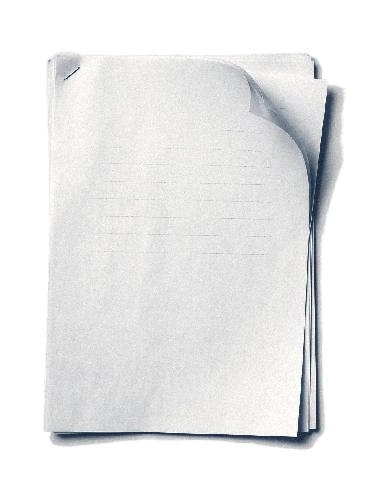

Curso de IA · Aula 1
Como ela escreve, como se mede e onde fica o seu dado.
imagem gerada por IA
Para começar
Seu maior receiocom a IA
sigilo · erro · tempo · não sei usar
Para começar
Pergunte a data sem dar o contrato
Pedido
Em que data o contrato do caso foi assinado?
Material

imagem gerada por IA
caso fictício
Como funciona
De regras fixas a padrões de dados
uma única
tarefa
tarefa geral,
em conversa
Antes, regras escritas à mão; hoje, padrões tirados de dados.
Como funciona
A IA escreve uma palavra por vez
- pedido
- caso
- recurso
- procedente
- improcedente
- extinto
valores ilustrativos
Como funciona
Probabilidade,não consulta
Como funciona
Sem fonte, a data não se sustenta
- 17/11/2019
- 05/08/2020
- 02/01/2018
- 30/09/2021
plausível e sem fonte
ou ela recusa“Sem o contrato, não sei a data.”
datas e valores ilustrativos
Como funciona
A janela de contexto é a mesa
a mesa
sua pergunta
conversa anterior
arquivos anexados
O que não cabe fica fora da mesa.
imagem gerada por IA


Como funciona
Ela erra com amesma convicção
Detetive de alucinação
A fronteira da IA é irregular
Fácil
para nós, difícil para ela
Contar quantos “i” tem a palavra “inconstitucionalidade”.
Difícil
para nós, fácil para ela
Resumir cem páginas de autos em poucos minutos.
exemplos ilustrativos · [CONFERIR] Dell'Acqua et al.
Detetive de alucinação
Três trechos para conferir na fonte
Em duplas
Marque cada trecho: sustentado, contradito ou não localizado.
trechos e fontes por QR [CONFERIR]
Trechos
imagens geradas por IA
[CONFERIR] trecho do professor
Detetive de alucinação
Onde estava o erro
contrato.pdf
sentenca.pdf
resposta da IA
A cláusula 4 fixa multa de 2%.sustentado
A sentença julgou o pedido procedente.contradito
Há precedente idêntico do tribunal.
não localizado na fonte
[CONFERIR] trecho do professor
Detetive de alucinação
A verificaçãocontinua humana
Qual a melhor IA
Há duas formas de medir uma IA
a mesma prova
para todos
pessoas
votam
Qual a melhor IA
O benchmark aplica a mesma prova
0 de 10
acertos na prova
ilustrativo
Qual a melhor IA
Vote antes de saber qual é qual
A
modelo oculto
Não tenho o contrato. Envie o documento e eu localizo a data.
B
modelo oculto
O contrato foi assinado em 05/08/2020.
Vote na resposta que você usaria no caso.
ilustrativo
Qual a melhor IA
Demos a provada PGE às IAs
Qual a melhor IA
A prova tem 14 questões e 180 pontos
180
pontos em 14 questões
12 curtas de 10 pontos
1 parecer de 30
1 peça de 30
corrigida por dois modelos Gemma 4 locais
Qual a melhor IA
Nesta prova, o topo ficou próximo
91,7
90,9
88,7
86,8
83,4
79,4
78,0
77,8
75,5
68,7
64,4
correção por modelos; não mede trabalho jurídico
Qual a melhor IA
O que essa nota não prova
Correção
quem deu a nota
Juízes Gemma, não uma banca; sem as respostas por questão.
Prova
o que ela mede
A prova de 2021 pode ter sido vista no treino; prova não é trabalho.
Onde fica o dado
Modelo local: 68,7% nesta prova
68,7%
Gemma 4 31B, rodando via Ollama
Onde fica o dado
O sigilo depende de onde roda
roda no servidor
de quem vende
pode rodar no
seu computador
Verifique a configuração antes de usar dados do caso.
[CONFERIR] exemplos, out/2026
Para levar
Escolha por tarefae teste você
- 1Teste com o seu próprio material.
- 2Confira cada trecho na fonte.
- 3A data segue sem fonte: Aula 2.